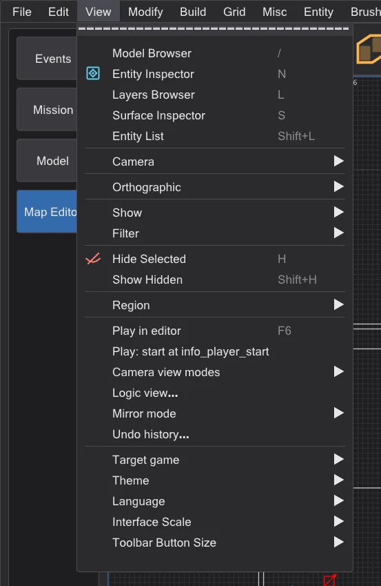
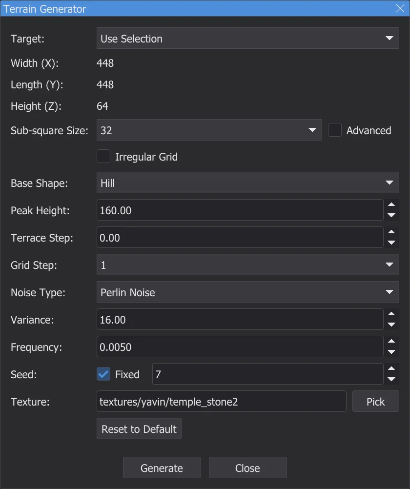
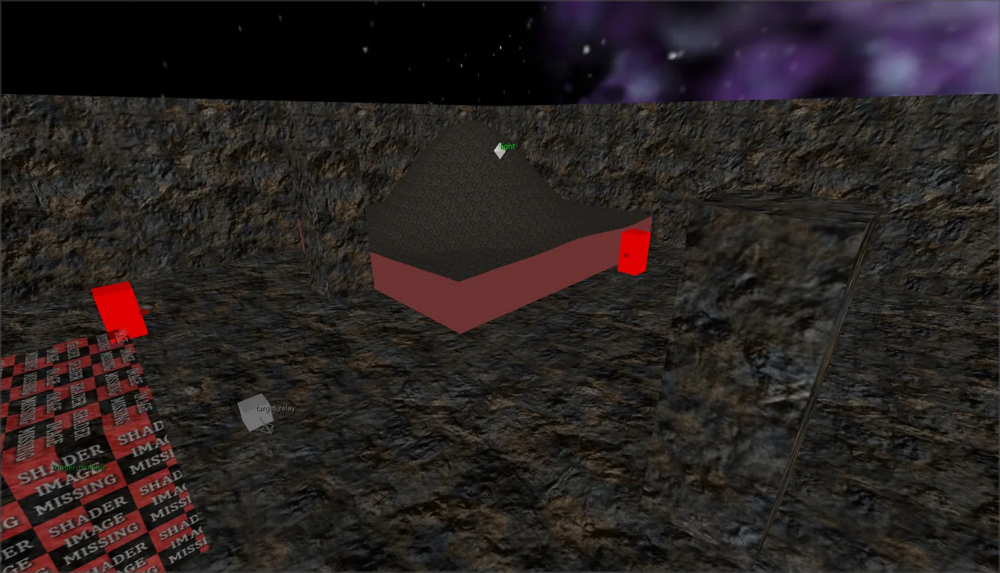
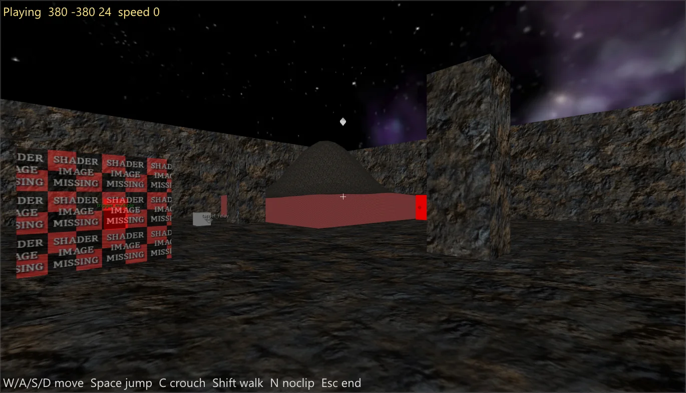
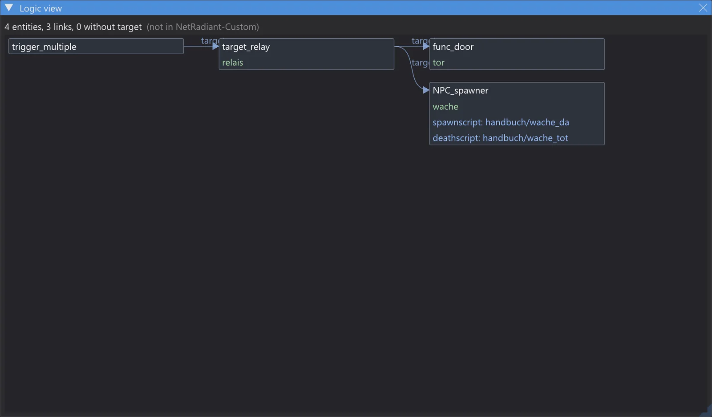
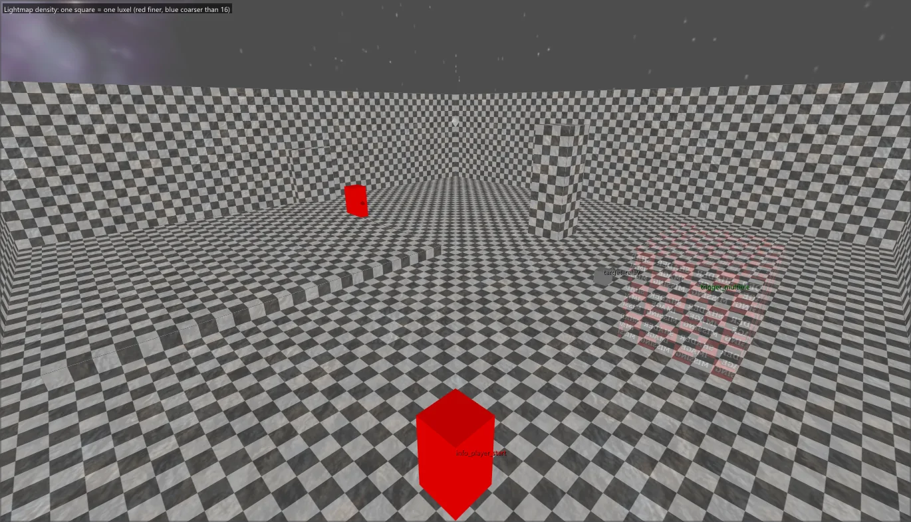
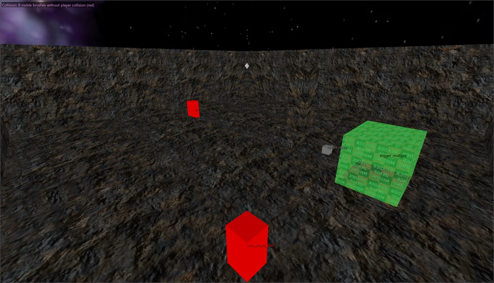
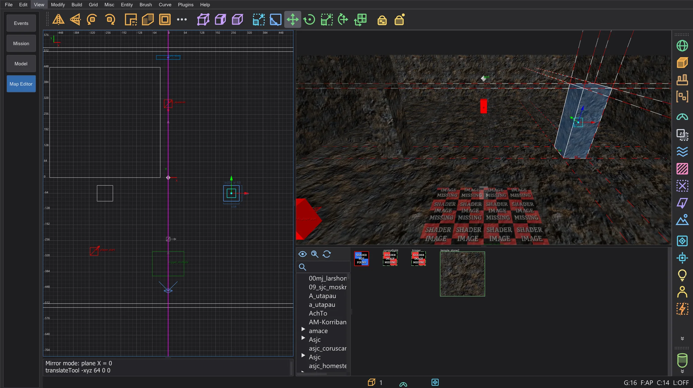
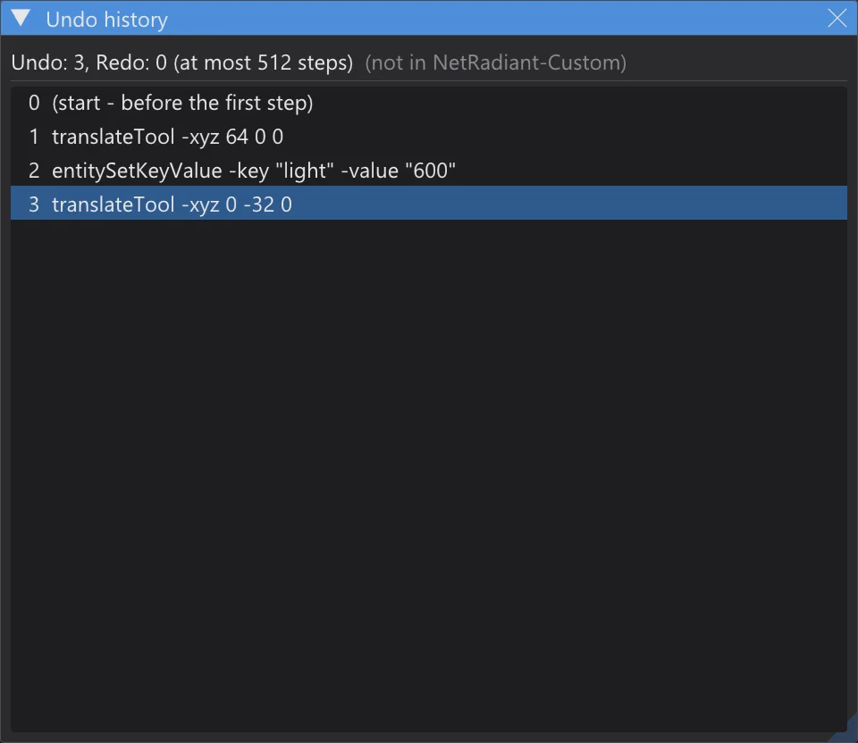

Map editor: terrain, playing, logic, mirror and more
Generate terrain, walk through the map without compiling, see the links between entities, check lightmap density and collision, edit symmetric maps with the mirror mode and jump through the undo history.
Everything on this page except the Terrain Generator is not in NetRadiant-Custom: each function has its own menu entry with that hint, and with all of them off the editor behaves like NetRadiant-Custom. The new entries are at the end of View, above the program settings.

Terrain Generator#
Plugins > TerrainGenerator > Generate Terrain is the plugin from the current NetRadiant-Custom source (master, after the release 20260114), ported line by line: the same heights, triangles and textures as the original for the same values. The dialog stays open while you work in the views.




- Target: Use Selection takes the size of the selected brush and replaces it; Manual Size builds the terrain around the origin.
- Base Shape: (hill, crater, ridge, slope, volcano, valley, tunnel ...), Noise Type:, Variance:, Frequency:, terraces and the grid step as in the original; Generate is one undo step.
- Own addition: Seed: Fixed starts the random numbers with a fixed value - the same values then give the same terrain again. Off (default), the random sequence runs on as in NetRadiant-Custom.
Free split windows#
Preferences > Interface > Layout > Free split windows (layout Split): every one of the four windows gets a small menu in its corner - camera, XY, XZ or YZ, also two windows with the same view. Ctrl+Tab changes the type of the active 2D window, the splitter positions are kept. Off (default), the four windows are fixed as in NetRadiant-Custom.
Play in the editor#

- No compile: the collision comes straight from the brushes and patches with the contents q3map2 would give them (surfaceparms of the game, clip brushes, nonsolid, water ...). Walking, jumping, stairs and slopes use the port of the game's movement code (Pmove) - the same as the preview of the program: JKA and Movie Duels, or the Jedi Outcast rules.
- W/A/S/D move, Space jumps, C or Ctrl crouches, Shift walks, the mouse looks, N switches noclip, Esc ends and puts the camera back where it was.
- Play: start at info_player_start: on, the start is the first info_player_start (its origin + 9 and its angle, as the game picks it); off, the start is the camera.
Logic view#

- Logic view draws every link between the entities as a graph from left to right: target, target2 ... target5, NPC_target, the targets of doors and every *target* key of the entity definitions; the script keys (spawnscript, usescript, deathscript ...) are listed in the box of the entity.
- A click on a box selects the entity and centers the 2D views and the camera on it; a double-click on a script line opens the ICARUS script in the script editor. Mouse wheel zooms, right or middle mouse button moves.
- A target without a matching targetname appears as a red box - a link that leads nowhere in the game.
Camera view modes#




- Lightmap density: a checkerboard of the luxel size per face, computed like q3map2 (q3map_lightmapSampleSize, _samplesize and _lightmapscale of the entity, -samplesize; enlarged until the face fits into 128 luxels). Finer than 16 reddish, coarser bluish, faces without lightmap grey.
- Collision: brushes by the contents q3map2 gives them - playerclip magenta, monsterclip orange, botclip yellow, shotclip cyan, nodrop dark red, water, slime, lava, fog, triggers. Visible walls the player walks through (no player collision) glow bright red.
- Visibility (PVS) and Triangle load need the compiled .bsp next to the map (with VIS): what the engine draws from the camera's cluster in green, or a heat map of the triangles drawn from each place. The numbers are shown at the top left of the camera.
Mirror mode#

- Mirror mode: Off, Mirror plane X, Mirror plane Y or Mirror plane Z; the plane goes through the origin or, with Plane through selection center (on grid), through the center of the selection on the grid. It is drawn as a magenta line in the 2D views.
- Every change to the selection is written to its counterpart in the same undo step - live while dragging. Brushes and patches count one by one, point entities and groups as a whole; origin, angle and angles are mirrored, textures like Flip (with Texture Lock as set).
- If the exact mirror image already exists, it becomes the counterpart; otherwise the first change creates a mirrored copy. Deleting removes both; undo brings back both exactly. Objects that lie symmetric on the plane get no counterpart.
Undo history#

Undo history lists all undo steps (oldest first) and below them the redo steps in grey. A click jumps to the state after that step with as many Undo or Redo as needed - each with its console line, as with Ctrl+Z and Ctrl+Y. The list goes back as far as the undo queue (Preferences > Undo Queue Size, default 512).
misc_model from all model folders#
Recover misc_model from the geometry (Keeping the editor data) now looks for models in all model folders of the game, not only in the folders of the map's shaders. A model index (per model and mesh: vertex count, triangle set and shader) lies in the settings folder as karte_modellindex_<…>.txt. The first time - and for new or changed .pk3 files - bhed_q3map2 loads the missing models once (about half a minute for a big install); after that only the models whose meshes match a triangle surface of the .bsp, or whose shader the .bsp uses, are loaded. The console names the index and the candidates.
| Map | before | now |
|---|---|---|
| t2_trip | 0 | 13 |
| yavin1 | 18 | 32 |
| hoth2 | 5 | 32 |
| kor1 | 52 | 52 |
| jeditemple_garden (source known) | 265 / 265 | 265 / 265 |
GPU shadow tests (switched off)#
bhed_q3map2 has the command-line switch -bhedgpu for -light: the test "does the ray from the luxel to the light hit something?" runs on the graphics card (Direct3D 11), the light itself stays on the CPU. The result is byte for byte the same as without it - checked on five maps and by the ctest q3map2_gpu. On the measured computer (32 threads, RTX 4070 Laptop) it was not faster (mp/duel1 2.3 s → 3.2 s, kejim_post 10.0 s → 11.3 s), so it is not in the Build menu and stays off.